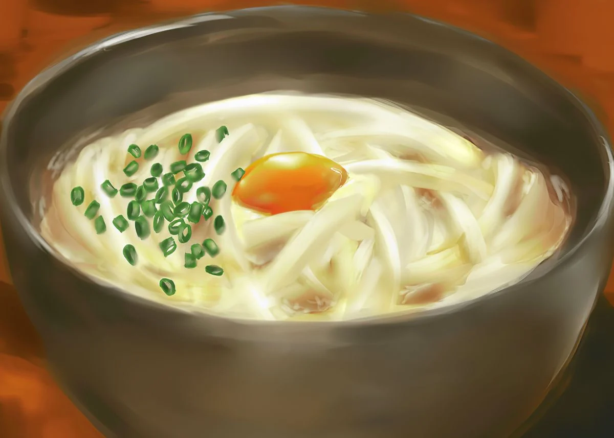

The best pick me up after a cold, rainy day!
This dish is a small, quick and easy meal to keep your belly full and warm
Ingredients
- Udon Noodle
- Dashi Broth
- Choice of Toppings
Recipe instructions
- Make Dashi (Use water and dashi packet, bring to boil)
- Add soy sauce, mirin, sugar, and salt to Dashi broth
- Cook udon noodles (set aside in bowl)
- Combine Dashi Broth and Noodles in serving bowl
- Add choice of toppings (Green Onion, Chashu, Enoki Mushrooms)
Return to top
Return to main page